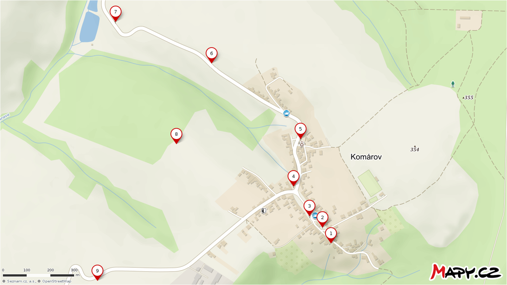
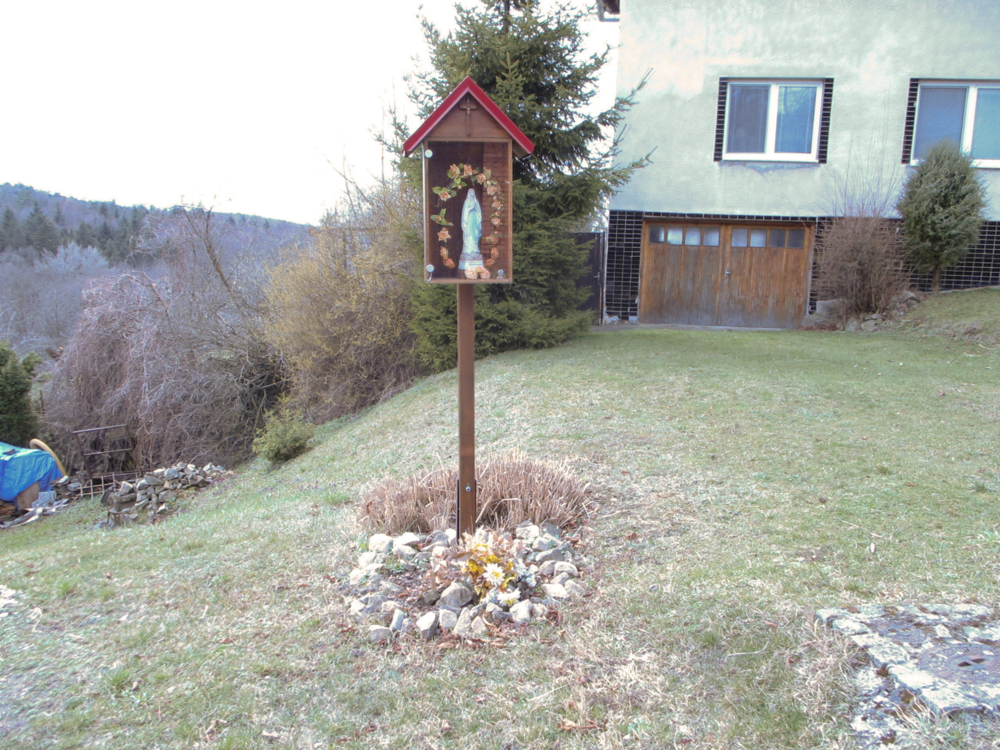
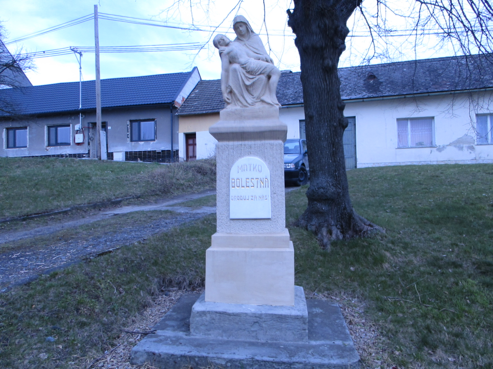
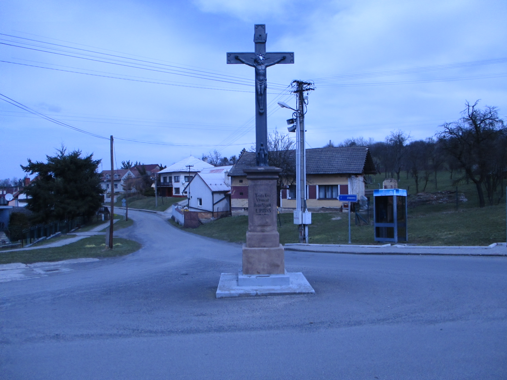
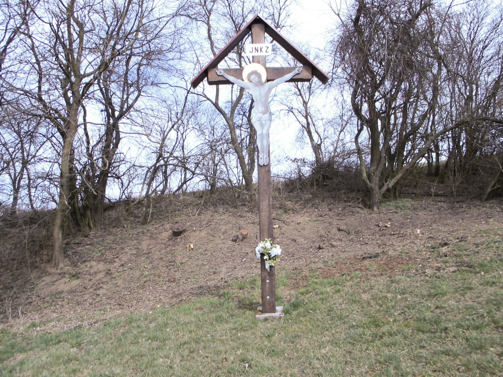
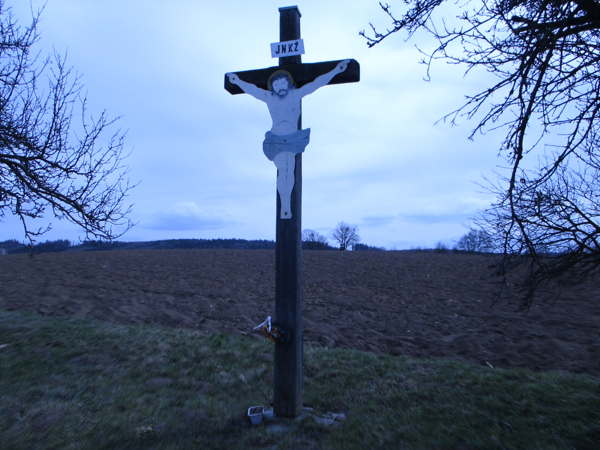
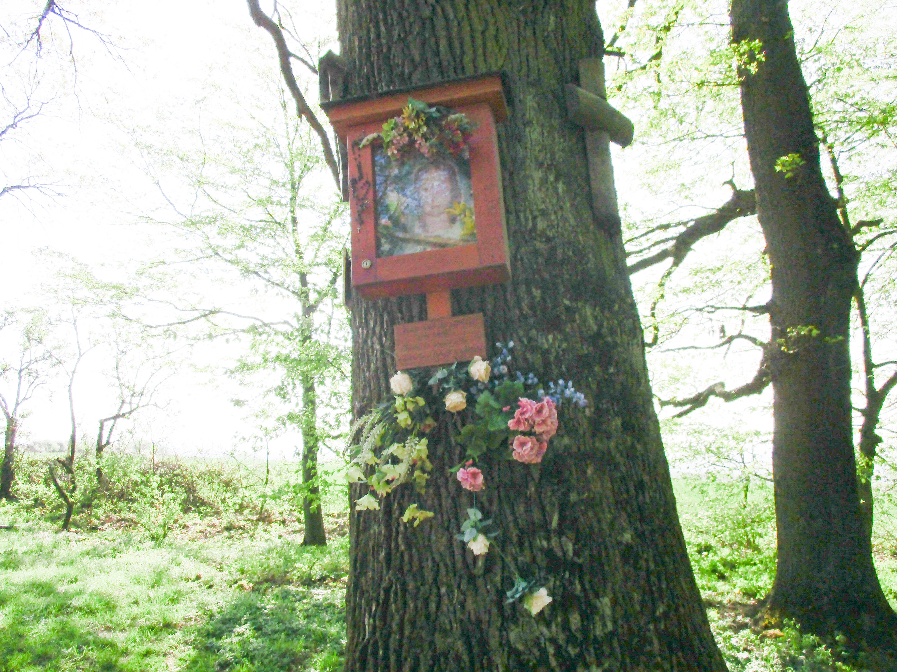

Zobrazit mapu v aplikaci mapotic

Zastavení 1
Panna Maria v Podevsí

Zastavení 2
Panna Maria Bolestná

Zastavení 3
Kříž na na návsi

Zastavení 4
Kříž na křižovatce
Zastavení 5
Kříž u kostela

Zastavení 6
Kříž v Kopaninách

Zastavení 7
Panna Maria v Kračinách

Zastavení 8
Panna Maria v Boří


Zastavení 10
Zastavení u Kameňa